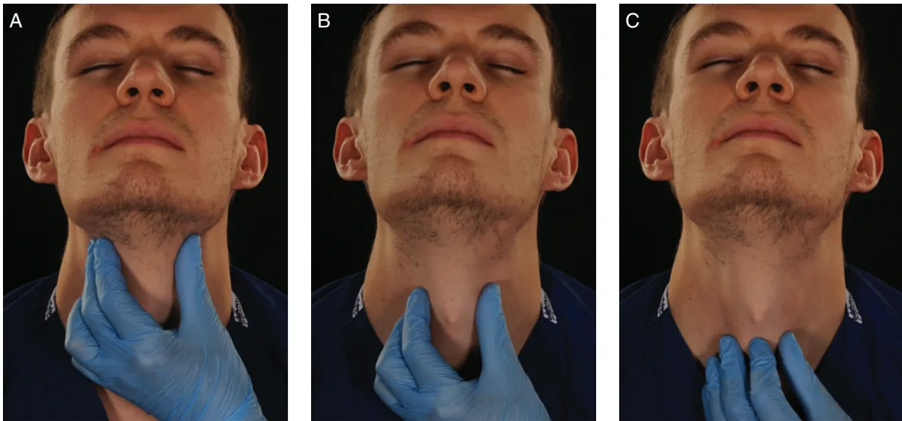
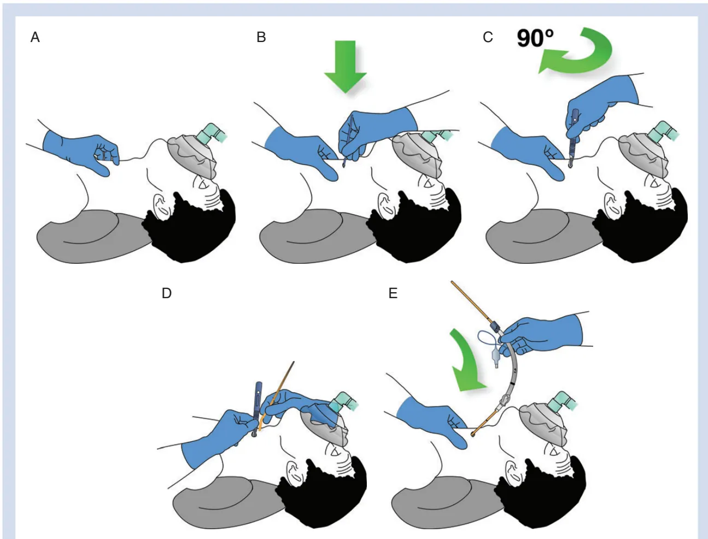

C. Frerk1,*, V. S. Mitchell2, A. F. McNarry3, C. Mendonca4, R. Bhagrath5, A. Patel6, E. P. O'Sullivan7, N. M. Woodall8 and I. Ahmad9, Difficult Airway Society intubation guidelines working group
1Department of Anaesthesia, Northampton General Hospital, Billing Road, Northampton NN1 5BD, UK,
2Department of Anaesthesia and Perioperative Medicine, University College London Hospitals NHS Foundation Trust, 235 Euston Road, London NW1 2BU, UK, 3Department of Anaesthesia, NHS Lothian, Crewe Road South, Edinburgh EH4 2XU, UK, 4Department of Anaesthesia, University Hospitals Coventry & Warwickshire NHS Trust, Clifford Bridge Road, Coventry CV2 2DX, UK, 5Department of Anaesthesia, Barts Health, West Smithfield, London EC1A 7BE, UK, 6Department of Anaesthesia, The Royal National Throat Nose and Ear Hospital, 330 Grays Inn Road, London WC1X 8DA, UK, 7Department of Anaesthesia, St James's Hospital, PO Box 580, James's Street, Dublin 8, Ireland, 8Department of Anaesthesia, The Norfolk and Norwich University Hospitals NHS Foundation Trust, Colney Lane, Norwich NR4 7UY, UK, and 9Department of Anaesthesia, Guy's and St Thomas' NHS Foundation Trust, Great Maze Pond, London SE1 9RT, UK
*Corresponding author. E-mail: chris.frerk@ngh.nhs.uk
These guidelines provide a strategy to manage unanticipated difficulty with tracheal intubation. They are founded on published evidence. Where evidence is lacking, they have been directed by feedback from members of the Difficult Airway Society and based on expert opinion. These guidelines have been informed by advances in the understanding of crisis management; they emphasize the recognition and declaration of difficulty during airway management. A simplified, single algorithm now covers unanticipated difficulties in both routine intubation and rapid sequence induction. Planning for failed intubation should form part of the pre-induction briefing, particularly for urgent surgery. Emphasis is placed on assessment, preparation, positioning, preoxygenation, maintenance of oxygenation, and minimizing trauma from airway interventions. It is recommended that the number of airway interventions are limited, and blind techniques using a bougie or through supraglottic airway devices have been superseded by video- or fibre-optically guided intubation. If tracheal intubation fails, supraglottic airway devices are recommended to provide a route for oxygenation while reviewing how to proceed. Second-generation devices have advantages and are recommended. When both tracheal intubation and supraglottic airway device insertion have failed, waking the patient is the default option. If at this stage, face-mask oxygenation is impossible in the presence of muscle relaxation, cricothyrotomy should follow immediately. Scalpel cricothyrotomy is recommended as the preferred rescue technique and should be practised by all anaesthetists. The plans outlined are designed to be simple and easy to follow. They should be regularly rehearsed and made familiar to the whole theatre team.
† This Article is accompanied by Editorials aev298 and aev404.
Accepted: September 28, 2015
© The Author 2015. Published by Oxford University Press on behalf of the British Journal of Anaesthesia.
This is an Open Access article distributed under the terms of the Creative Commons Attribution Non-Commercial License (http://creativecommons.org/licenses/by-nc/4.0/), which permits non-commercial re-use, distribution, and reproduction in any medium, provided the original work is properly cited. For commercial re-use, please contact journals.permissions@oup.com
Key words: airway obstruction; complications; intubation; intubation, endotracheal; intubation, transtracheal; ventilation
Clinical practice has changed since the publication of the original Difficult Airway Society (DAS) guidelines for management of unanticipated difficult intubation in 2004.1 The 4th National Audit Project of the Royal College of Anaesthetists and Difficult Airway Society (NAP4) provided detailed information about the factors contributing to poor outcomes associated with airway management and highlighted deficiencies relating to judgement, communication, planning, equipment, and training.2 New pharmacological agents and videolaryngoscopes have been introduced, and further research has focused on extending the duration of apnoea without desaturation by improving preoxygenation and optimizing patient position.
These updated guidelines provide a sequential series of plans to be used when tracheal intubation fails and are designed to prioritize oxygenation while limiting the number of airway interventions in order to minimize trauma and complications (Fig 1). The principle that anaesthetists should have back-up plans in place before performing primary techniques still holds true.
Separate guidelines exist for difficult intubation in paediatric anaesthesia, obstetric anaesthesia, and for extubation.3-5
These guidelines are directed at the unanticipated difficult intubation. Every patient should have an airway assessment
performed before surgery to evaluate all aspects of airway management, including front-of-neck access.
The aim of the guidelines is to provide a structured response to a potentially life-threatening clinical problem. They take into account current practice and recent developments.
Every adverse event is unique, the outcome of which will be influenced by patient co-morbidity, urgency of the procedure, skill set of the anaesthetist, and available resources.2 6 It is acknowledged that anaesthetists do not work in isolation and that the role of the anaesthetic assistant is important in influencing the outcome of an airway crisis.7 Decisions about the best alternatives in the event of difficulty should be made and discussed with the anaesthetic assistant before induction of anaesthesia.
These guidelines recognize the difficulties in decision-making during an unfolding emergency. They include steps to assist the anaesthetic team in making the correct decisions, limiting the number of airway intervention attempts, encouraging declaration of failure by placing a supraglottic airway device (SAD) even when face-mask ventilation is possible, and explicitly recommending a time to stop and think about how to proceed.
An attempt has been made to identify essential skills and techniques with the highest success rate. Anaesthetists and
DAS Difficult intubation guidelines – overview
Plan A: Facemask ventilation and tracheal intubation
Laryngoscopy → Succeed → Tracheal intubation
↓ Failed intubation
Plan B: Maintaining oxygenation: SAD insertion
Supraglottic Airway Device → Succeed → STOP AND THINK
STOP AND THINK
Options (consider risks and benefits):
1. Wake the patient up
2. Intubate trachea via the SAD
3. Proceed without intubating the trachea
4. Tracheostomy or cricothyrotomy
↓ Failed SAD ventilation
Plan C: Facemask ventilation
Final attempt at face mask ventilation → Succeed → Wake the patient up
↓ CICO
Plan D: Emergency front of neck access
Cricothyrotomy
This flowchart forms part of the DAS Guidelines for unanticipated difficult intubation in adults 2015 and should be used in conjunction with the text.
Fig 1 Difficult Airway Society difficult intubation guidelines: overview. Difficult Airway Society, 2015, by permission of the Difficult Airway Society. This image is not covered by the terms of the Creative Commons Licence of this publication. For permission to re-use, please contact the Difficult Airway Society. CICO, can't intubate can't oxygenate; SAD, supraglottic airway device.
anaesthetic assistants using these guidelines must ensure that they are familiar with the equipment and techniques described. This may require acquisition of new skills and regular practice, even for experienced anaesthetists.
The Difficult Airway Society commissioned a working group to update the guidelines in April 2012. An initial literature search was conducted for the period January 2002 to June 2012 using databases (Medline, PubMed, Embase, and Ovid) and a search engine (Google Scholar). The websites of the American Society of Anesthesiologists (http://www.asahq.org), Australian and New Zealand College of Anaesthetists (http://www.anzca.edu.au), European Society of Anesthesiologists' (http://www.esahq.org/euroanaesthesia), Canadian Anesthesiologists' Society (http://www.cas.ca), and the Scandinavian Society of Anesthesiology and Intensive Care Medicine (http://ssai.info/guidelines/) were also searched for airway guidelines. English language articles and abstract publications were identified using keywords and filters. The search terms were as follows: 'Aintree intubating catheter', 'Airtraq', 'airway device', 'airway emergency', 'airway management', 'Ambu aScope', 'backward upward rightward pressure', 'Bonfils', 'Bullard', 'bronchoscopy', 'BURP manoeuvre', 'can't intubate can't ventilate', 'can't intubate can't oxygenate', 'C-Mac', 'Combitube', 'cricoid pressure', 'cricothyrotomy', 'cricothyrotomy', 'C trach', 'difficult airway', 'difficult intubation', 'difficult laryngoscopy', 'difficult mask ventilation', 'difficult ventilation', 'endotracheal intubation', 'esophageal intubation', 'Eschmann stylet', 'failed intubation', 'Fastrach', 'fiber-optic scope', 'fiberoptic intubation', 'fiberoptic scope', 'fiberoptic stylet', 'fibroscope', 'Frova catheter', 'Glidescope', 'gum elastic bougie', 'hypoxia', 'i-gel', 'illuminating stylet', 'jet ventilation catheter', 'laryngeal mask', 'laryngeal mask airway Supreme', 'laryngoscopy', 'lighted stylet', 'light wand', 'LMA Supreme', 'Manujet', 'McCoy', 'McGrath', 'nasotracheal intubation', 'obesity', 'oesophageal detector device', 'oesophageal intubation', 'Pentax airway scope', 'Pentax AWS', 'ProSeal LMA', 'Quicktrach', 'ramping', 'rapid sequence induction', 'Ravussin cannula', 'Sanders injector', 'Shikani stylet', 'sugammadex', 'supraglottic airway', 'suxamethonium', 'tracheal introducer', 'tracheal intubation', 'Trachview', 'Tru view', 'tube introducer', 'Venner APA', 'videolaryngoscope', and 'videolaryngoscopy'.
The initial search retrieved 16 590 abstracts. The searches (using the same terms) were repeated every 6 months. In total, 23 039 abstracts were retrieved and assessed for relevance by the working group; 971 full-text articles were reviewed. Additional articles were retrieved by cross-referencing the data and hand-searching. Each of the relevant articles was reviewed by at least two members of the working group. In areas where the evidence was insufficient to recommend particular techniques, expert opinion was sought and reviewed.8 This was most notably the situation when reviewing rescue techniques for the 'can't intubate can't oxygenate' (CICO) situation.
Opinions of the DAS membership were sought throughout the process. Presentations were given at the 2013 and 2014 DAS Annual Scientific meetings, updates were posted on the DAS website, and members were invited to complete an online survey about which areas of the existing guidelines needed updating. Following the methodology used for the extubation guidelines,5 a draft version of the guidelines was circulated to selected members of DAS and acknowledged international experts for comment. All correspondence was reviewed by the working group.
It is not intended that these guidelines should constitute a minimum standard of practice, nor are they to be regarded as a substitute for good clinical judgement.
Human factors issues were considered to have contributed to adverse outcomes in 40% of the instances reported to NAP4; however, a more in-depth analysis of a subset of patients identified human factor influences in every instance. Flin and colleagues9 identified latent threats (poor communication, poor training and teamwork, deficiencies in equipment, and inadequate systems and processes) predisposing to loss of situation awareness and subsequent poor decision-making as a precursor to final action errors.
Adoption of guidelines and a professional willingness to follow them are not enough on their own to avoid serious complications of airway management during anaesthesia. All the instances reported to NAP4 occurred despite widespread dissemination of the original DAS guidelines, which had been published in 2004. The complexities of difficult airway management cannot be distilled into a single algorithm, and even the best anaesthetic teams supported by the best guidelines will still struggle to perform optimally if the systems in which they operate are flawed.10 The 2015 guidelines acknowledge this.
During a crisis, it is common to be presented with more information than can be processed.11 This cognitive overload impairs decision-making and can cause clinicians to 'lose sight of the big picture' and become fixated on a particular task, such as tracheal intubation or SAD placement. These guidelines provide an explicit instruction for the team to 'stop and think' to help reduce this risk.
Poor anaesthetic decision-making secondary to cognitive errors and the impact of human factors in emergency airway management has recently been discussed.12 Cognitive aids are increasingly being used by clinicians during unfolding emergencies;13 for example, the Vortex Approach has been devised to support decision-making during difficult airway management.14 The algorithms that accompany these guidelines are intended as teaching and learning tools and have not been specifically designed to be used as prompts during an airway crisis.
For any plan to work well in an emergency, it must be known to all members of the team and should be rehearsed. For rare events, such as CICO, this rehearsal can be achieved with simulation training, as has recently been included in the Australian and New Zealand College of Anaesthetists continuing professional development requirements.15 16 This also provides the opportunity to develop non-technical skills, such as leadership, team coordination, communication, and shared understanding of roles, which has been shown to improve performance in intensive care and trauma teams.17 18
Structured communication between anaesthetists and anaesthetic assistants could help prepare for and deal with airway difficulties. Talking before every patient, or at least before every list, about the plan to manage difficulties should they develop is good practice. At a minimum, this involves thinking about the challenges that might be encountered and checking that the appropriate equipment is available.
If airway management does become difficult after induction of anaesthesia, a clear declaration of failure at the end of each plan will facilitate progression through the airway strategy. The use of a structured communication tool, such as PACE (Probe,
Alert, Challenge, Emergency), can aid communication of concerns when cognitive overload and hierarchical barriers might otherwise make this difficult.19
Our profession must continue to acknowledge and address the impact of environmental, technical, psychological, and physiological factors on our performance. Human factors issues at individual, team, and organizational levels all need to be considered to enable these 2015 guidelines to be as effective as possible.
Airway management is safest when potential problems are identified before surgery, enabling the adoption of a strategy, a series of plans, aimed at reducing the risk of complications.2
Preoperative airway assessment should be performed routinely in order to identify factors that might lead to difficulty with face-mask ventilation, SAD insertion, tracheal intubation, or front-of-neck access.
Prediction of difficulty in airway management is not completely reliable;20–22 the anaesthetist should have a strategy in place before the induction of anaesthesia, and this should be discussed at the team brief and the sign-in (pre-induction) phase of the WHO Surgical Safety Checklist.23 24
Assessment of the risk of aspiration is a key component of planning airway management. Steps should be taken before surgery to reduce the volume and pH of gastric contents by fasting and pharmacological means. Mechanical drainage by nasogastric tube should be considered in order to reduce residual gastric volume in patients with severely delayed gastric emptying or intestinal obstruction.2
The placement of a cuffed tube in the trachea offers the greatest protection against aspiration. Suxamethonium is the traditional neuromuscular blocking agent of choice because its rapid onset allows early intubation without the need for bag-mask ventilation. Several studies have compared suxamethonium with rocuronium for rapid sequence induction, and although some have shown better intubating conditions with suxamethonium, others have found that after rocuronium 1.2 mg kg-1 the speed of onset and intubation conditions are comparable.25–30 Suxamethonium-induced fasciculation increases oxygen consumption during apnoea, which may become relevant in the event of airway obstruction.31 32 The ability to antagonize the effect of rocuronium rapidly with sugammadex may be an advantage,30 although it should be remembered that this does not guarantee airway patency or the return of spontaneous ventilation.33 34 If rapid antagonism of rocuronium with sugammadex is part of the failed intubation plan, the correct dose (16 mg kg-1) must be immediately available.35 36
Cricoid pressure is applied to protect the airway from contamination during the period between loss of consciousness and placement of a cuffed tracheal tube. This is a standard component of a rapid sequence induction in the UK.37 It is often overlooked that cricoid pressure has been shown to prevent gastric distension during mask ventilation and was originally described for this purpose.38 39 Gentle mask ventilation after the application of cricoid pressure and before tracheal intubation prolongs the time to desaturation. This is most useful in those with poor respiratory reserve, sepsis, or high metabolic requirements and also provides an early indication of the ease of ventilation. A force of 30 N provides good airway protection, while
minimizing the risk of airway obstruction, but this is not well tolerated by the conscious patient.40
Cricoid pressure should be applied with a force of 10 N when the patient is awake, increasing to 30 N as consciousness is lost.41 42 Although the application of cricoid pressure creates a physical barrier to the passage of gastric contents, it has also been shown to reduce lower oesophageal sphincter tone, possibly making regurgitation more likely.43 44 Current evidence suggests that if applied correctly, cricoid pressure may improve the view on direct laryngoscopy.45 However, there are many reports demonstrating that it is often poorly applied, and this may make mask ventilation, direct laryngoscopy, or SAD insertion more difficult.46–52 If initial attempts at laryngoscopy are difficult during rapid sequence induction, cricoid pressure should be released. This should be done under vision with the laryngoscope in place and suction available; in the event of regurgitation,41 cricoid pressure should be immediately reapplied.
Second-generation SADs offer greater protection against aspiration than first-generation devices and are recommended should intubation fail during a rapid sequence induction.
The essence of Plan A (Table 1) is to maximize the likelihood of successful intubation at the first attempt or, failing that, to limit the number and duration of attempts at laryngoscopy in order to prevent airway trauma and progression to a CICO situation.
All patients should be optimally positioned and preoxygenated before induction of anaesthesia. Neuromuscular block facilitates face-mask ventilation53 54 and tracheal intubation. Every attempt at laryngoscopy and tracheal intubation has the potential to cause trauma. A suboptimal attempt is a wasted attempt and having failed, the chance of success declines with each subsequent attempt.55 56 Repeated attempts at tracheal intubation may reduce the likelihood of effective airway rescue with a SAD.57 These guidelines recommend a maximum of three attempts at intubation; a fourth attempt by a more experienced colleague is permissible. If unsuccessful, a failed intubation should be declared and Plan B implemented.
Table 1 Key features of Plan A
Good patient positioning maximizes the chance of successful laryngoscopy and tracheal intubation. In most patients, the best position for direct laryngoscopy with a Macintosh-style blade is achieved with the neck flexed and the head extended at the atlanto-occipital joint; the classic 'sniffing' position.58–60 In the obese patient, the 'ramped' position should be used routinely to ensure horizontal alignment of the external auditory meatus and the suprasternal notch because this improves the view during direct laryngoscopy.61–64 This position also improves airway patency and respiratory mechanics and facilitates passive oxygenation during apnoea.65–66
All patients should be preoxygenated before the induction of general anaesthesia.67 De-nitrogenation can be achieved with an appropriate flow of 100% oxygen into the breathing system, maintaining an effective face-mask seal68 until the end-tidal oxygen fraction is 0.87–0.9.69 Many other preoxygenation techniques have been described.70–79
Preoxygenation increases the oxygen reserve, delays the onset of hypoxia, and allows more time for laryngoscopy, tracheal intubation,65–69 and for airway rescue should intubation fail. In healthy adults, the duration of apnoea without desaturation (defined as the interval between the onset of apnoea and the time peripheral capillary oxygen saturation reaches a value of ) is limited to 1–2 min whilst breathing room air, but can be extended to 8 min with preoxygenation.69 Preoxygenation using a 20–25° head-up position80–81 and continuous positive airway pressure has been shown to delay the onset of hypoxia in obese patients.82–84 The duration of apnoea without desaturation can also be prolonged by passive oxygenation during the apnoeic period (apnoeic oxygenation). This can be achieved by delivering up to 15 litres of oxygen through nasal cannulae, although this may be uncomfortable for an awake patient.65–85–86 Nasal Oxygenation During Efforts Of Securing A Tube (NODESAT) has been shown to extend the apnoea time in obese patients and in patients with a difficult airway.87 Transnasal humidified high-flow oxygen (up to 70 litres ) via purpose-made nasal cannulae has been shown to extend the apnoea time in obese patients and in patients with difficult airways,88 although its efficacy as a means of preoxygenation has not been evaluated fully.89–90 Apnoeic oxygenation is an area of recent research interest about which further evidence is awaited. The administration of oxygen by nasal cannulae in addition to standard preoxygenation and face-mask ventilation is recommended in high-risk patients.
The induction agent should be selected according to the clinical condition of the patient. Propofol, the most commonly used induction agent in the UK, suppresses laryngeal reflexes and provides better conditions for airway management than other agents.91–93
The 5th National Audit Project of the Royal College of Anaesthetists highlighted the relationship between difficult airway management and awareness.94 It is important to ensure that the patient is adequately anaesthetized during repeated attempts at intubation.
If intubation is difficult, further attempts should not proceed without full neuromuscular block. Neuromuscular block
abolishes laryngeal reflexes, increases chest compliance, and facilitates face-mask ventilation.53–54–95 Complete neuromuscular block should be ensured if any difficulty is encountered with airway management.96 Rocuronium has a rapid onset and can be antagonized immediately with sugammadex, although the incidence of anaphylaxis may be higher than with other non-depolarizing neuromuscular blocking agents.97–99
Mask ventilation with 100% oxygen should begin as soon as possible after induction of anaesthesia. If difficulty is encountered, the airway position should be optimized and airway manoeuvres such as a chin lift or jaw thrust should be attempted. Oral and nasopharyngeal airways should be considered, and a four-handed technique (two-person or pressure-controlled mechanical ventilation) should be used.100 The 'sniffing' position increases the pharyngeal space and improves mask ventilation.101 Inadequate anaesthesia or inadequate neuromuscular block make mask ventilation more difficult.102–103
The choice of laryngoscope influences the chance of successful tracheal intubation. Videolaryngoscopes offer an improved view compared with conventional direct laryngoscopy and are now the first choice or default device for some anaesthetists.104–113 Regular practice is required to ensure that the improved view translates reliably into successful tracheal intubation.114 All anaesthetists should be trained to use, and have immediate access to, a videolaryngoscope.115 The flexible fibroscope or optical stylets, such as Bonfils (Karl Storz), Shikani (Clarus Medical), or Levitan FPS scope™ (Clarus Medical), may be the preferred choice for individuals who are expert in their use.116–122 The first and second choice of laryngoscope will be determined by the anaesthetist's experience and training.
Tracheal tubes should be selected according to the nature of the surgical procedure, but their characteristics can influence the ease of intubation. A smaller tube is easier to insert because a better view of the laryngeal inlet is maintained during passage of the tube between the cords. Smaller tubes are also less likely to cause trauma.123 'Hold-up' at the arytenoids is a feature of the left-facing bevel of most tracheal tubes, and can occur particularly whilst railroading larger tubes over a bougie, stylet, or fibroscope.124–125 This problem can be overcome by rotating the tube anticlockwise to change the orientation of the bevel or by preloading the tube so that the bevel faces posteriorly and by minimizing the gap between the fibroscope and the tube during fibre-optic intubation.125–127 Tubes with hooded, blunted, or flexible tips, such as the Parker Flex-Tip™ (Parker Medical), and tubes supplied with the Intubating LMA® (Teleflex Medical Europe Ltd) have been designed to reduce the incidence of this problem.128–132
In these guidelines, an attempt at laryngoscopy is defined as the insertion of a laryngoscope into the oral cavity. Every attempt should be carried out with optimal conditions because repeated attempts at laryngoscopy and airway instrumentation are associated with poor outcomes and the risk of developing a CICO situation.56–133–136 If difficulty is encountered, help should be summoned early, regardless of the level of experience of the anaesthetist.
If intubation is difficult, there is little point in repeating the same procedure unless something can be changed to improve the chance of success. This may include the patient's position, the intubating device or blade, adjuncts such as introducers and stylets, depth of neuromuscular block, and personnel. The number of attempts at laryngoscopy should be limited to three. A fourth attempt should be undertaken only by a more experienced colleague.
External laryngeal manipulation applied with the anaesthetist's right hand or backward, upward, and rightward pressure (BURP) on the thyroid cartilage applied by an assistant may improve the view at laryngoscopy.137–142 A benefit of videolaryngoscopy is that the anaesthetic assistant is also able to see the effects of laryngeal manipulation.143
The gum elastic bougie is a widely used device for facilitating tracheal intubation when a grade 2 or 3a view of the larynx is seen during direct laryngoscopy.144–146 Pre-shaping of the bougie facilitates successful intubation.147 It can also be helpful during videolaryngoscopy.148–149 Blind bougie insertion is associated with trauma and is not recommended in a grade 3b or 4 view.150–155 The 'hold-up' sign may signal the passage of the bougie as far as small bronchi,156 but it is associated with risk of airway perforation and trauma, especially with single-use bougies.153–157–159 Forces as little as 0.8 N can cause airway trauma.153 The characteristics of bougies vary, and this may affect their performance.153 Once the bougie is in the trachea, keeping the laryngoscope in place enhances the chance of successful intubation.129 Non-channelled videolaryngoscopes with angulated blades necessitate the use of a pre-shaped stylet or bougie to aid the passage of the tracheal tube through the cords.160–163 When using a videolaryngoscope, the tip of the tube should be introduced into the oropharynx under direct vision because failure to do so has been associated with airway trauma.163–167
Difficulty with tracheal intubation is usually the result of a poor laryngeal view, but other factors, such as tube impingement, can hinder the passage of the tube into the trachea.
Once tracheal intubation has been achieved, correct placement of the tube within the trachea must be confirmed. This should include visual confirmation that the tube is between the vocal cords, bilateral chest expansion, and auscultation and capnography. A continuous capnography waveform with appropriate inspired and end-tidal values of CO2 is the gold standard for confirming ventilation of the lungs. Capnography should be available in every location where a patient may require anaesthesia.2–168
Absence of exhaled CO2 indicates failure to ventilate the lungs, which may be a result of oesophageal intubation or complete airway obstruction (rarely, complete bronchospasm).2 In such situations, it is safest to assume oesophageal intubation. Videolaryngoscopy, examination with a fibroscope, or ultrasound can be used to verify that the tube is correctly positioned.169–171
In these guidelines (Fig. 2), the emphasis of Plan B (Table 2) is on maintaining oxygenation using an SAD.
Successful placement of a SAD creates the opportunity to stop and think about whether to wake the patient up, make a further attempt at intubation, continue anaesthesia without a tracheal tube, or rarely, to proceed directly to a tracheostomy or cricothyrotomy.
If oxygenation through a SAD cannot be achieved after a maximum of three attempts, Plan C should be implemented.
As difficulty with intubation cannot always be predicted, every anaesthetist should have a well-thought-through plan for such an eventuality. The decision about which SAD to use for rescue should have been made before induction of anaesthesia, and this choice should be determined by the clinical situation, device availability, and operator experience.
NAP4 identified the potential advantages of second-generation devices in airway rescue and recommended that all hospitals have them available for both routine use and rescue airway management.2 Competence and expertise in the insertion of any SAD requires training and practice.172–176 All anaesthetists should be trained to use and have immediate access to second-generation SADs.
Cricoid pressure decreases hypopharyngeal space177 and impedes SAD insertion and the placement of both first- and second-generation devices.178–181 Cricoid pressure will have been removed during Plan A if laryngoscopy was difficult and (in the absence of regurgitation) should remain off during insertion of a SAD.
It has been argued that second-generation SADs should be used routinely because of their efficacy and increased safety when compared with first-generation devices.182 Several second-generation SADs have been described,183–191 and it is likely that during the lifetime of these guidelines many similar devices will appear.
The ideal attributes of a SAD for airway rescue are reliable first-time placement, high seal pressure, separation of gastrointestinal and respiratory tracts, and compatibility with fibre-optically guided tracheal intubation. These attributes are variably combined in different devices.182 Of those currently available, only the i-gelTM (Intersurgical, Wokingham, UK), the ProsealTM LMA® (PLMA; Teleflex Medical Europe Ltd, Athlone, Ireland), and the LMA SupremeTM (SLMA; Teleflex Medical Ltd) have large-scale longitudinal studies,192–195 literature reviews,196 or meta-analyses in adults197–200 supporting their use. A number of studies have compared second-generation SADs,201–224 but it is important to recognize that the experience of the operator with the device also influences the chance of successful insertion.225
Repeated attempts at inserting a SAD increases the likelihood of airway trauma and may delay the decision to accept failure and move to an alternative technique to maintain oxygenation.
Successful placement is most likely on the first attempt. In one series, insertion success with the PLMATM was 84.5% on the first attempt, decreasing to 36% on the fourth attempt.193 In the series of Goldmann and colleagues,194 only 4.2% of devices were placed on the third or fourth attempt. Three studies report that a third insertion attempt increased overall success rate by
Management of unanticipated difficult tracheal intubation in adults
Plan A: Facemask ventilation and tracheal intubation
If in difficulty → call for help
Success → Confirm tracheal intubation with capnography
Declare failed intubation
Plan B: Maintaining oxygenation: SAD insertion
Success → STOP AND THINK
Options (consider risks and benefits):
Declare failed SAD ventilation
Plan C: Facemask ventilation
Success → Wake the patient up
Declare CICO
Plan D: Emergency front of neck access
Post-operative care and follow up
This flowchart forms part of the DAS Guidelines for unanticipated difficult intubation in adults 2015 and should be used in conjunction with the text.
Fig 2 Management of unanticipated difficult tracheal intubation in adults. Difficult Airway Society, 2015, by permission of the Difficult Airway Society. This image is not covered by the terms of the Creative Commons Licence of this publication. For permission to re-use, please contact the Difficult Airway Society. SAD, supraglottic airway device.
Table 2 Key features of Plan B. SAD, supraglottic airway device
more than 5%; however, one was conducted with operators who had minimal experience, and the other two used the Baska® mask (Baska Versatile Laryngeal Mask, Pty Ltd, Strathfield, NSW, Australia).189 214 226 Changing to an alternative SAD has been shown to be successful.192 193 211 216 218 223 224 A maximum of three attempts at SAD insertion is recommended; two with the preferred second-generation device and another attempt with an alternative. An attempt includes changing the size of the SAD.
Even supraglottic airways can fail.227 228 If effective oxygenation has not been established after three attempts, Plan C should be implemented.
Bougie-aided placement of the PLMA has been described as improving first-time placement.229 In comparison studies, the bougie-guided technique was 100% effective at achieving first-time placement and more effective than digital insertion or insertion with the introducer tool.230 231 Bougie-aided placement provides better alignment of the drain port and a better fibre-optic view of the cords through the PLMA than the introducer tool method.232 Patients with a history of difficult tracheal intubation or predicted difficulty were excluded from these studies, making it unclear how effective this technique would be in this situation. The technique has been used effectively in a simulated difficult airway in patients wearing a hard collar,233 but again patients with predicted difficulty were excluded. A comparative study between the i-gel and the PLMA using a guided technique with a duodenal tube234 showed both devices to have a first-time insertion success rate of >97%. An orogastric tube has also been used effectively to facilitate PLMA placement in 3000 obstetric patients.235 Despite the apparent benefit, bougie- and gastric tube-guided placement of second-generation devices are not guaranteed to be successful.193 221 The technique requires
experience, it may cause trauma150 and it is not listed in the current PLMA instruction manual.236
Clinical examination and capnography should be used to confirm ventilation. If effective oxygenation has been established through a SAD, it is recommended that the team stop and take the opportunity to review the most appropriate course of action.
There are four options to consider: wake the patient up; attempt intubation via the SAD using a fibre-optic scope; proceed with surgery using the supraglottic airway; or (rarely) proceed to tracheostomy or cricothyrotomy.
Patient factors, the urgency of the surgery, and the skill set of the operator all influence the decision, but the underlying principle is to maintain oxygenation while minimizing the risk of aspiration.
If the surgery is not urgent then the safest option is to wake the patient up, and this should be considered first. This will require the full antagonism of neuromuscular block. If rocuronium or vecuronium has been used, sugammadex is an appropriate choice of antagonistic agent. If another non-depolarizing neuromuscular blocking agent has been used then anaesthesia must be maintained until paralysis can be adequately antagonized. Surgery may then be postponed or may continue after awake intubation or under regional anaesthesia.
If waking the patient up is inappropriate (for example, in the critical care unit, in the emergency department, or where life-saving surgery must proceed immediately), the remaining options should be considered.
Intubation through a SAD is only appropriate if the clinical situation is stable, oxygenation is possible via the SAD, and the anaesthetist is trained in the technique. Limiting the number of airway interventions is a core principle of safe airway management; repeated attempts at intubation through a SAD are inappropriate.
Intubation through an intubating laryngeal mask airway (iLMATM; Teleflex Medical Ltd) was included in the 2004 guidelines.1 Although an overall success rate of 95.7% has been reported in a series of 1100 patients using a blind technique,237 first-attempt success rates are higher using fibre-optic guidance,238 239 and a guided technique has been shown to be of benefit in patients with difficult airways.240 The potential for serious adverse outcomes associated with blind techniques remains.241 With the need for repeated insertion attempts to achieve success238 and a low first-time success rate240 242 (even with second-generation devices243), the blind technique is redundant.
Direct fibre-optically guided intubation has been described via a number of SADs, although this may be technically challenging.244–248 Fibre-optically guided tracheal intubation through the i-gel has been reported with a high success rate.249 250 Second-generation SADs specifically designed to facilitate tracheal intubation have been described,190 251 252 but data regarding their efficacy are limited.
The use of an Aintree Intubation CatheterTM (AIC; Cook Medical, Bloomington, USA) over a fibre-optic scope allows guided intubation through a SAD where direct fibre-optically guided intubation is not possible.248 253 The technique is described on the DAS website.254 Descriptions of AIC use include a series of
128 patients with a 93% success rate through a classic Laryngeal Mask Airway.255 The patients in whom the technique was successful included 90.8% with a grade 3 or 4 Cormack and Lehane view at direct laryngoscopy and three patients in whom mask ventilation was reported to be impossible.
Aintree Intubation CatheterTM-facilitated intubation has also been described with the PLMA256 257 and the i-gel.258 Aintree Intubation CatheterTM-guided intubation through an LMA SupremeTM has been reported,259 but it is unreliable260 and cannot be recommended.261
This should be considered as a high-risk option reserved for specific or immediately life-threatening situations and should involve input from a senior clinician. The airway may already be traumatized from several unsuccessful attempts at intubation and may deteriorate during the course of surgery because of device dislodgement, regurgitation, airway swelling, or surgical factors. Rescue options are limited given that tracheal intubation is already known to have failed.
Although waking a patient up after failed intubation is most often in their best interest, this is a difficult decision for an anaesthetist to take, especially during a crisis.241 262
In rare circumstances, even when it is possible to ventilate through a SAD, it may be appropriate to secure the airway with a tracheostomy or cricothyrotomy.
If effective ventilation has not been established after three SAD insertion attempts, Plan C (Table 3) follows on directly. A number of possible scenarios are developing at this stage. During Plans A and B, it will have been determined whether face-mask ventilation was easy, difficult, or impossible, but the situation may have changed if attempts at intubation and SAD placement have traumatized the airway.
If face-mask ventilation results in adequate oxygenation, the patient should be woken up in all but exceptional circumstances, and this will require full antagonism of neuromuscular block.
If it is not possible to maintain oxygenation using a face mask, ensuring full paralysis before critical hypoxia develops offers a final chance of rescuing the airway without recourse to Plan D.
Table 3 Key features of Plan C.
CICO, can't intubate can't oxygenate; SAD, supraglottic airway device
Sugammadex has been used to antagonize neuromuscular block during the CICO situation but does not guarantee a patent and manageable upper airway.34 263–266 Residual anaesthesia, trauma, oedema, or pre-existing upper airway pathology may all contribute to airway obstruction.33
A CICO situation arises when attempts to manage the airway by tracheal intubation, face-mask ventilation, and SAD have failed (Table 4). Hypoxic brain damage and death will occur if the situation is not rapidly resolved.
Current evidence in this area comes either from scenario-based training using manikin, cadaver, or wet lab facilities or from case series, typically in out-of-hospital or emergency department settings.267–272 None of these completely replicates the situation faced by anaesthetists delivering general anaesthesia in a hospital setting.
NAP4 provided commentary on a cohort of emergency surgical airways and cannula cricothyrotomies performed when other methods of securing the airway during general anaesthesia had failed.2 The report highlighted a number of problems, including decision-making (delay in progression to cricothyrotomy), knowledge gaps (not understanding how available equipment worked), system failures (specific equipment not being available), and technical failures (failure to site a cannula in the airway).
After NAP4, discussion largely focused on the choice of technique and equipment used when airway rescue failed, but the report also highlighted the importance of human factors.2 273–275
Regular training in both technical and non-technical elements is needed in order to reinforce and retain skills. Success depends on decision-making, planning, preparation, and skill acquisition, all of which can be developed and refined with repeated practice.276 277 Cognitive processing and motor skills decline under stress. A simple plan to rescue the airway using familiar equipment and rehearsed techniques is likely to increase the chance of a successful outcome. Current evidence indicates that a surgical technique best meets these criteria.2 269 273 278
A cricothyrotomy may be performed using either a scalpel or a cannula technique. Anaesthetists must learn a scalpel technique and have regular training to avoid skill fade.279
Scalpel cricothyrotomy is the fastest and most reliable method of securing the airway in the emergency setting.269 278 280 A cuffed tube in the trachea protects the airway from aspiration, provides a secure route for exhalation, allows low-pressure ventilation using standard breathing systems, and permits end-tidal CO2 monitoring.
A number of surgical techniques have been described, but there is a lack of evidence of the superiority of one over another.268 281–283 The techniques all have steps in common: neck extension, identification of the cricothyroid membrane, incision through the skin and cricothyroid membrane, and insertion of a cuffed tracheal tube. In some descriptions, the skin and cricothyroid membrane are cut sequentially; in others, a single incision is recommended. Many include a placeholder to keep the incision open until the tube is in place. Some use specialist equipment (cricoid hook, tracheal dilators etc).
A single stab incision through the cricothyroid membrane is appealing in terms of its simplicity, but this approach may fail in the obese patient or if the anatomy is difficult, and a vertical skin incision is recommended in this situation. The approach
Table 4 Key features of Plan D.
CICO, can't intubate can't oxygenate
recommended in these guidelines is a modification of previously described techniques.
Airway rescue via the front of neck should not be attempted without complete neuromuscular block. If sugammadex has been administered earlier in the strategy, a neuromuscular blocking agent other than rocuronium or vecuronium will be required.
Oxygen (100%) should be applied to the upper airway throughout, using a SAD, a tightly fitting face mask, or nasal insufflation.
The use of the 'laryngeal handshake' as described by Levitan281 (Fig. 3) is recommended as the first step because it promotes confidence in the recognition of the three-dimensional anatomy of the laryngeal structures; the conical cartilaginous cage consisting of the hyoid, thyroid, and cricoid. The laryngeal handshake is performed with the non-dominant hand, identifying the hyoid and thyroid laminae, stabilizing the larynx between thumb and middle finger, and moving down the neck to palpate the cricothyroid membrane with the index finger.
Standardization is useful in rarely encountered crisis situations. It is recommended that the technique described below is adopted. The technique relies on the correct equipment being immediately available. Operator position and stabilization of the hands is important.
The sniffing position used for routine airway management does not provide optimal conditions for cricothyrotomy; in this situation, neck extension is required. In an emergency, this may be achieved by pushing a pillow under the shoulders, dropping the head of the operating table, or by pulling the patient up so that the head hangs over the top of the trolley.

Fig 3 The laryngeal handshake. (A) The index finger and thumb grasp the top of the larynx (the greater cornu of the hyoid bone) and roll it from side to side. The bony and cartilaginous cage of the larynx is a cone, which connects to the trachea. (B) The fingers and thumb slide down over the thyroid laminae. (C) Middle finger and thumb rest on the cricoid cartilage, with the index finger palpating the cricothyroid membrane.
If unsuccessful, proceed to scalpel–finger–bougie technique (below).
Impalpable cricothyroid membrane: scalpel–finger–bougie technique
This approach is indicated when the cricothyroid membrane is impalpable or if other techniques have failed.
Equipment, patient, and operator position are as for the scalpel technique (Fig. 5)
Note that a smaller cuffed tube (including a Melker) can be used provided it fits over the bougie. The bougie should be advanced using gentle pressure; clicks may be felt as the bougie slides over the tracheal rings. 'Hold-up' at less than 5 cm may indicate that the bougie is pre-tracheal.
Cannula techniques were included in the 2004 guidelines and have been advocated for a number of reasons, including the fact that anaesthetists are much more familiar with handling cannulae than scalpels. It has been argued that reluctance to use a scalpel may delay decision-making and that choosing a cannula technique may promote earlier intervention.268
Whilst narrow-bore cannula techniques are effective in the elective setting, their limitations have been well described.268 Ventilation can be achieved only by using a high-pressure source, and this is associated with a significant risk of barotrauma.268 Failure because of kinking, malposition, or displacement of the cannula can occur even with purpose-

Fig 4 Cricothyrotomy technique. Cricothyroid membrane palpable: scalpel technique; 'stab, twist, bougie, tube'. (A) Identify cricothyroid membrane. (B) Make transverse stab incision through cricothyroid membrane. (C) Rotate scalpel so that sharp edge points caudally. (D) Pulling scalpel towards you to open up the incision, slide coude tip of bougie down scalpel blade into trachea. (E) Railroad tube into trachea.
designed cannulae, such as the RavussinTM (VBM, Sulz, Germany).2 268 High-pressure ventilation devices may not be available in all locations, and most anaesthetists do not use them regularly. Their use in the CICO situation should be limited to experienced clinicians who use them in routine clinical practice.
Experience of training protocols carried out using high-fidelity simulation with a live animal model (wet lab) suggest that performance can be improved by following didactic teaching of rescue protocols.287 Wet lab high-fidelity simulation is unique because it provides a model that bleeds, generates real-time stress, and has absolute end-points (end-tidal CO2 or hypoxic cardiac arrest) to delineate success or failure. After observation of >10 000 clinicians performing infraglottic access on anaesthetized sheep,268 288 Heard has recommended a standard operating procedure with a 14 gauge InsyteTM (Becton, Dickinson and Company) cannula technique, with rescue oxygenation delivered via a purpose-designed Y-piece insufflator with a large-bore exhaust arm (Rapid-O2TM Meditech Systems Ltd UK). This is followed by insertion of a cuffed tracheal tube using the Melker® wire-guided kit. An algorithm, a structured teaching programme, competency-based assessment tools, and a series of videos have been developed to support this methodology and to promote standardized training.287
Further evidence of the efficacy of this technique in human practice is needed before widespread adoption can be recommended.
Some wide-bore cannula kits, such as the Cook Melker® emergency cricothyrotomy set, use a wire-guided (Seldinger) technique.289 This approach is less invasive than a surgical cricothyrotomy and avoids the need for specialist equipment for ventilation. The skills required are familiar to anaesthetists and intensivists because they are common to central line insertion and percutaneous tracheostomy; however, these techniques require fine motor control, making them less suited to stressful situations. Whilst a wire-guided technique may be a reasonable alternative for anaesthetists who are experienced with this method, the evidence suggests that a surgical cricothyrotomy is both faster and more reliable.288
A number of non-Seldinger wide-bore cannula-over-trochar devices are available for airway rescue. Although successful use has been reported in CICO, there have been no large studies of these devices in clinical practice.275 The diversity of
Difficult Airway Society 2015
CALL FOR HELP
↓ Continue 100% O2
Declare CICO
Plan D: Emergency front of neck access
Continue to give oxygen via upper airway
Ensure neuromuscular blockade
Position patient to extend neck
Equipment: 1. Scalpel (number 10 blade)
2. Bougie
3. Tube (cuffed 6.0mm ID)
Laryngeal handshake to identify cricothyroid membrane
Palpable cricothyroid membrane
Impalpable cricothyroid membrane
Post-operative care and follow up
This flowchart forms part of the DAS Guidelines for unanticipated difficult intubation in adults 2015 and should be used in conjunction with the text.
Fig 5 Failed intubation, failed oxygenation in the paralysed, anaesthetized patient. Technique for scalpel cricothyrotomy. Difficult Airway Society, 2015, by permission of the Difficult Airway Society. This image is not covered by the terms of the Creative Commons Licence of this publication. For permission to re-use, please contact the Difficult Airway Society.
commercially available devices also presents a problem because familiarity with equipment that is not universally available challenges standardization of training.
It is good practice to attempt to identify the trachea and the cricothyroid membrane during the preoperative assessment.273 If this is not possible with inspection and palpation alone, it can often be achieved with ultrasonography.171 290 The role of ultrasound in emergency situations is limited. If immediately available and switched on it may help to identify key landmarks but should
not delay airway access.171 291 292 Airway evaluation using ultrasound is a valuable skill for anaesthetists,292 and training in its use is recommended.273 293
Difficulties with airway management and the implications for postoperative care should be discussed at the end of the procedure during the sign-out section of the WHO checklist.294 In addition to a verbal handover, an airway management plan should be documented in the medical record. Many airway guidelines and airway interest groups169 295 296 (including the DAS
Extubation and Obstetric Guidelines4,5) recommend that patients should be followed up by the anaesthetist in order to document and communicate difficulties with the airway. There is a close relationship between difficult intubation and airway trauma;297,298 patient follow-up allows complications to be recognized and treated. Any instrumentation of the airway can cause trauma or have adverse effects; this has been reported with videolaryngoscopes,163,166 second-generation supraglottic devices,192,193,195 and fibre-optic intubation.299 The American Society of Anesthesiologists closed claims analysis suggests that it is the pharynx and the oesophagus that are damaged most commonly during difficult intubation.298 Pharyngeal and oesophageal injury are difficult to diagnose, with pneumothorax, pneumomediastinum, or surgical emphysema present in only 50% of patients.5 Mediastinitis after airway perforation has a high mortality, and patients should be observed carefully for the triad of pain (severe sore throat, deep cervical pain, chest pain, dysphagia, painful swallowing), fever, and crepitus.297,300 They should be warned to seek medical attention should delayed symptoms of airway trauma develop.
Despite these recommendations, communication is often inadequate.301–304 The DAS Difficult Airway Alert Form is a standard template with prompts for documentation and communication.305 The desire to provide detailed clinical information must be balanced against the need for effective communication. At present, there is no UK-wide difficult airway database, although national systems such as Medic Alert have been advocated306 and can be accessed for patients with 'Intubation Difficulties'.307
Coding is the most effective method of communicating important information to general practitioners; the code for 'difficult tracheal intubation' is Read Code SP2y3303,308 and should be included on discharge summaries. Read Codes in the UK will be replaced by the international SNOMED CT (Systematized Nomenclature of Medicine–Clinical Terms) by 2020.
Every failed intubation, emergency front-of-neck access, and airway-related unplanned admission should be reviewed by departmental airway leads and should be discussed at morbidity and mortality meetings.
Complications of airway management are infrequent. The NAP4 project estimated that airway management resulted in one serious complication per 22 000 general anaesthetics, with death or brain damage complicating 1:150 000. It is not possible to study such rare events in prospective trials, so our most valuable insights come from the detailed analysis of adverse events.2,241,262
Guidelines exist to manage complex emergency problems in other areas of clinical practice, with cardiopulmonary resuscitation guidelines being an obvious example. Standardized management plans are directly transferable from one hospital to another and make it less likely that team members will encounter unfamiliar techniques and equipment during an unfolding emergency. These guidelines are directed at anaesthetists with a range of airway skills and are not specifically aimed at airway experts. Some anaesthetists may have particular areas of expertise, which can be deployed to supplement the techniques described.
The guidelines are directed at the unanticipated difficult airway, where appropriately trained surgeons may not be immediately available, so all anaesthetists must be capable of performing a cricothyrotomy. There are some situations where these
guidelines may be loosely followed in the management of patients with a known or suspected difficult airway, and in these circumstances a suitably experienced surgeon with appropriate equipment could be immediately available to perform the surgical airway on behalf of the anaesthetist.
Complications related to airway management are not limited to situations where the primary plan has been tracheal intubation; 25% of anaesthesia incidents reported to NAP4 started with the intention of managing the airway using a SAD. Whilst the key principles and techniques described in these guidelines are still appropriate in this situation, it is likely that at the point of recognizing serious difficulty the patient may not be well oxygenated or optimally positioned.
These guidelines have been created for 'unanticipated difficulty' with airway management, and it is important that whatever the primary plan may be, a genuine attempt has been made to identify possible difficulties with the generic Plans A, B, C, and D. Assessing mouth opening, neck mobility, and the location of the cricothyroid membrane before surgery will help to determine whether some rescue techniques are unlikely to be successful.
There are randomized controlled trials and meta-analyses supporting the use of some airway devices and techniques,197–200 but for others no high-grade evidence is available and recommendations are necessarily based on expert consensus.8 In this manuscript, individual techniques have not been listed against their levels of evidence, although other groups have taken this approach.309
Implementation of the guidelines does not obviate the need for planning at a local level. The training required to develop and maintain technical skills has been studied in relation to various aspects of airway management, including videolaryngoscopy and cricothyrotomy.109,276,310–313 To achieve and maintain competence with devices such as videolaryngoscopes and second-generation SADs and drugs such as sugammadex, they need to be available for regular use, and local training will be necessary. New airway devices will continue to be developed and introduced into clinical practice; their place in these guidelines will need to be evaluated. Even when no single device or technique has a clear clinical benefit, limiting choice simplifies training and decision-making. In the area of airway rescue by front-of-neck access, feedback from DAS members and international experts suggested that there was a need to unify the response of anaesthetists to the 'CICO' emergency and to recommend a single pathway. While UK anaesthetists are required to revalidate every 5 yr and advanced airway management features in the Royal College of Anaesthetists CPD matrix314 (2A01), there is currently no specific requirement for training or retraining in cricothyrotomy. A consistent local effort will be required to ensure that all those involved in airway management are trained and familiar with the technique. These guidelines recommend the adoption of scalpel cricothyrotomy as a technique that should be learned by all anaesthetists. This method was selected because it can be performed using equipment available at almost every location where an anaesthetic is performed and because insertion of a large-bore cuffed tube provides protection against aspiration, an unobstructed route for exhalation and the ability to monitor end-tidal CO2. There are, however, other valid techniques for front-of-neck access, which may continue to be provided in some hospitals where additional equipment and comprehensive training programmes are available. It is incumbent on the anaesthetic community to ensure that data from all front-of-neck access techniques are gathered and are used to inform change when these guidelines are next updated.
We thank Christopher Acott (Australia), Takashi Asai (Japan), Paul Baker (New Zealand), David Ball (UK), Elizabeth Behringer (USA), Timothy Cook (UK), Richard Cooper (Canada), Valerie Cunningham (UK), James Dinsmore (UK), Robert Greif (Switzerland), Peter Groom (UK), Ankie Hamaekers (The Netherlands), Andrew Heard (Australia), Thomas Heidegger (Switzerland), Andrew Higgs (UK), Eric Hodgson (South Africa), Fiona Kelly (UK), Michael Seltz Kristensen (Denmark), David Lacquiere (UK), Richard Levitan (USA), Eamon McCoy (UK), Barry McGuire (UK), Sudheer Medakkar (UK), Mary Mushambi (UK), Jaideep Pandit (UK), Bhavesh Patel (UK), Adrian Pearce (UK), Jairaj Rangasami (UK), Jim Roberts (UK), Massimiliano Sorbello (Italy), Mark Stacey (UK), Anthony Turley (UK), Matthew Turner (UK), and Nicholas Wharton (UK) for reviewing and commenting on early drafts of the paper. We thank Mansukh Popat for assisting the group when it was formed, for reviewing abstracts, and for contributing to the initial draft of Plan A. We thank Christopher Thompson for reviewing early drafts of the paper and for producing drawings illustrating Plan D. We thank Anna Brown, Mark Bennett, Sue Booth, Andy Doyle, Rebecca Gowie, Julie Kenny, and Maria Niven, librarians at University Hospital Coventry & Warwickshire NHS Trust, for help with the literature search and retrieval of selected full-text articles.
C.F. has received funding for travel expenses from Intavent to give lectures at a conference and from Teleflex to attend an advisory board meeting regarding product development (no fees or honoraria paid). V.S.M. has received equipment and logistical support to conduct airway workshops from Accutronic, Airtraq, AMBU, Cook, Fisher & Paykel, Intersurgical, Karl Storz, Laerdal, McGrath videolaryngoscopes, Olympus, Pentax, Smiths Medical, Teleflex, and VBM. A.F.M. received a one-off unrestricted lecture fee from AMBU to discuss fibre-optic intubation in September 2011. A.F.M. has been given trial products by AMBU for clinical use and evaluation (AMBU Auragain February/March 2014). A.F.M. was loaned three McGrath MAC videolaryngoscopes for departmental use by Aircraft Medical. A.F.M. has been loaned eight optiflow humidifier units for use across all acute hospitals in NHS Lothian and has been funded for attendance at a THRIVE study and development day (hotel accommodation for two nights) by Fisher & Paykel. A.F.M. has been loaned equipment for workshops by Accutronic, Aircraft Medical, AMBU, Cook, Fannin, Freelance, Storz, and Teleflex Medical. A.F.M. acted as an advisor to NICE Medical Technology Evaluation Programme (unpaid) for the AMBU A2scope. C.M. has received equipment to conduct airway workshops from Karl-Storz, AMBU, Fannin UK, Freelance Surgical and Verathon. R.B. has been loaned products for departmental and workshop use by AMBU, Cook, Fisher & Paykel, Karl Storz and Teleflex. A.P. has received funding for travel and accommodation to give lectures from Laryngeal Mask Company, Venner Medical, and Fisher & Paykel and has worked with these companies, acting as a consultant for product development with research funding support. E.P.O.'s is a member of the Editorial Board of the British Journal of Anaesthesia. She has also acted as a consultant to AMBU (unpaid). N.M.W.'s department has received equipment from Olympus/Keymed for teaching purposes. I.A. has received travel funding for national and international lectures by Fisher & Paykel.
The Difficult Airway Society; The Royal College of Anaesthetists.
gov.au/metrosouth/engagement/docs/caps-notes-a.pdf (accessed 22 July 2015)
213. Teoh WHL, Lee KM, Suhitharan T, Yahaya Z, Teo MM, Sia ATH. Comparison of the LMA Supreme vs the i-gelTM in paralysed patients undergoing gynaecological laparoscopic surgery with controlled ventilation. Anaesthesia 2010; 65: 1173–9
214. Ragazzi R, Finessi L, Farinelli I, Alvisi R, Volta CA. LMA SupremeTM vs i-gelTM—a comparison of insertion success in novices. Anaesthesia 2012; 67: 384–8
215. Kang F, Li J, Chai X, Yu J-G, Zhang H-M, Tang C-L. Comparison of the I-gel laryngeal mask airway with the LMA-Supreme for airway management in patients undergoing elective lumbar vertebral surgery. J Neurosurg Anesthesiol 2015; 27: 37–41
216. Theiler LG, Kleine-Brueggeney M, Kaiser D, et al. Crossover comparison of the laryngeal mask supreme and the i-gel in simulated difficult airway scenario in anesthetized patients. Anesthesiology 2009; 111: 55–62
217. Pajiya AK, Wen Z, Wang H, Ma L, Miao L, Wang G. Comparisons of clinical performance of Guardian laryngeal mask with laryngeal mask airway ProSeal. BMC Anesthesiol 2015; 15: 69
218. Genzwuerker HV, Altmayer S, Hinkelbein J, Gernoth C, Viergutz T, Ocker H. Prospective randomized comparison of the new Laryngeal Tube Suction LTS II and the LMA-ProSeal for elective surgical interventions. Acta Anaesthesiol Scand 2007; 51: 1373–7
219. Jeon WJ, Cho SY, Baek SJ, Kim KH. Comparison of the ProSeal LMA and intersurgical I-gel during gynecological laparoscopy. Korean J Anesthesiol 2012; 63: 510–4
220. Sharma B, Sehgal R, Sahai G, Sood J. PLMA vs. I-gel: a comparative evaluation of respiratory mechanics in laparoscopic cholecystectomy. J Anaesthesiol Clin Pharmacol 2010; 26: 451–7
221. Van Zundert TCRV, Brimacombe JR. Similar oropharyngeal leak pressures during anaesthesia with i-gel, LMA-ProSeal and LMA-Supreme Laryngeal Masks. Acta Anaesthesiol Belg 2012; 63: 35–41
222. Chew EEF, Hashim NHM, Wang CY. Randomised comparison of the LMA Supreme with the I-Gel in spontaneously breathing anaesthetised adult patients. Anaesth Intensive Care 2010; 38: 1018–22
223. Joly N, Poulin L-P, Tanoubi I, Drolet P, Donati F, St-Pierre P. Randomized prospective trial comparing two supraglottic airway devices: i-gelTM and LMA-SupremeTM in paralyzed patients. Can J Anaesth 2014; 61: 794–800
224. Cook TM, Cranshaw J. Randomized crossover comparison of ProSeal Laryngeal Mask Airway with Laryngeal Tube Sonda during anaesthesia with controlled ventilation. Br J Anaesth 2005; 95: 261–6
225. Kristensen MS, Teoh WH, Asai T. Which supraglottic airway will serve my patient best? Anaesthesia 2014; 69: 1189–92
226. Alexiev V, Ochana A, Abdelrahman D, et al. Comparison of the Baska® mask with the single-use laryngeal mask airway in low-risk female patients undergoing ambulatory surgery. Anaesthesia 2013; 68: 1026–32
227. Ramachandran SK, Mathis MR, Tremper KK, Shanks AM, Kheterpal S. Predictors and clinical outcomes from failed Laryngeal Mask Airway UniqueTM: a study of 15,795 patients. Anesthesiology 2012; 116: 1217–26
228. Saito T, Liu W, Chew STH, Ti LK. Incidence of and risk factors for difficult ventilation via a supraglottic airway device in a population of 14 480 patients from South-East Asia. Anaesthesia 2015; 70: 1079–83
229. Howath A, Brimacombe J, Keller C. Gum-elastic bougie-guided insertion of the ProSeal laryngeal mask airway: a new technique. Anaesth Intensive Care 2002; 30: 624–7
230. Taneja S, Agarwal M, Dali JS, Agrawal G. Ease of ProSeal Laryngeal Mask Airway insertion and its fiberoptic view after placement using Gum Elastic Bougie: a comparison with conventional techniques. Anaesth Intensive Care 2009; 37: 435–40
231. Brimacombe J, Keller C, Judd DV. Gum elastic bougie-guided insertion of the ProSeal laryngeal mask airway is superior to the digital and introducer tool techniques. Anesthesiology 2004; 100: 25–9
232. El Beheiry H, Wong J, Nair G, et al. Improved esophageal patency when inserting the ProSeal laryngeal mask airway with an Eschmann tracheal tube introducer. Can J Anaesth 2009; 56: 725–32
233. Eschertzhuber S, Brimacombe J, Hohlrieder M, Stadlbauer KH, Keller C. Gum elastic bougie-guided insertion of the ProSeal laryngeal mask airway is superior to the digital and introducer tool techniques in patients with simulated difficult laryngoscopy using a rigid neck collar. Anesth Analg 2008; 107: 1253–6
234. Gasteiger L, Brimacombe J, Perkhofer D, Kaufmann M, Keller C. Comparison of guided insertion of the LMA ProSeal vs the i-gel? Anaesthesia 2010; 65: 913–6
235. Halaseh BK, Sukkar ZF, Hassan LH, Sia AT, Bushnaq WA, Adarbeh H. The use of ProSeal laryngeal mask airway in caesarean section—experience in 3000 cases. Anaesth Intensive Care 2010; 38: 1023–8
236. ProSeal LMA Instruction Manual. Available from https://www.lmana.com/viewwifu.php?ifu=19 (accessed 1 August 2014)
237. Caponas G. Intubating laryngeal mask airway. Anaesth Intensive Care 2002; 30: 551–69
238. Ferson DZ, Rosenblatt WH, Johansen MJ, Osborn I, Ovassapian A. Use of the intubating LMA-Fastrach in 254 patients with difficult-to-manage airways. Anesthesiology 2001; 95: 1175–81
239. Pandit JJ, MacLachlan K, Dravid RM, Popat MT. Comparison of times to achieve tracheal intubation with three techniques using the laryngeal or intubating laryngeal mask airway. Anaesthesia 2002; 57: 128–32
240. Joo HS, Kapoor S, Rose DK, Naik VN. The intubating laryngeal mask airway after induction of general anesthesia versus awake fiberoptic intubation in patients with difficult airways. Anesth Analg 2001; 92: 1342–6
241. Ruxton L. Fatal accident enquiry 15 into the death of Mr Gordon Ewing. 2010. Glasgow: April. Available from https://www.scotcourts.gov.uk/opinions/2010FAI15.html (accessed 14 April 2014)
242. Halwagi AE, Massicotte N, Lallo A, et al. Tracheal intubation through the I-gelTM supraglottic airway versus the LMA FastrachTM: a randomized controlled trial. Anesth Analg 2012; 114: 152–6
243. Theiler L, Kleine-Brueggeney M, Urwyler N, Graf T, Luyet C, Greif R. Randomized clinical trial of the i-gelTM and Magill tracheal tube or single-use ILMATM and ILMATM tracheal tube for blind intubation in anaesthetized patients with a predicted difficult airway. Br J Anaesth 2011; 107: 243–50
244. Bakker EJ, Valkenburg M, Galvin EM. Pilot study of the air-Q intubating laryngeal airway in clinical use. Anaesth Intensive Care 2010; 38: 346–8
245. McAleavey F, Michalek P. Aura-i laryngeal mask as a conduit for elective fiberoptic intubation. Anaesthesia 2010; 65: 1151
246. Danha RF, Thompson JL, Popat MT, Pandit JJ. Comparison of fibreoptic-guided orotracheal intubation through classic and single-use laryngeal mask airways. Anaesthesia 2005; 60: 184–8
247. Campbell J, Michalek P, Deighan M. I-gel supraglottic airway for rescue airway management and as a conduit for tracheal intubation in a patient with acute respiratory failure. Resuscitation 2009; 80: 963
248. Wong DT, Yang JJ, Mak HY, Jagannathan N. Use of intubation introducers through a supraglottic airway to facilitate tracheal intubation: a brief review. Can J Anaesth 2012; 59: 704–15
249. Shimizu M, Yoshikawa N, Yagi Y, et al. [Fiberoptic-guided tracheal intubation through the i-gel supraglottic airway]. Masui 2014; 63: 841–5
250. Kleine-Brueggeney M, Theiler L, Urwyler N, Vogt A, Greif R. Randomized trial comparing the i-gelTM and Magill tracheal tube with the single-use ILMATM and ILMATM tracheal tube for fiberoptic-guided intubation in anaesthetized patients with a predicted difficult airway. Br J Anaesth 2011; 107: 251–7
251. Darlong V, Biyani G, Baidya DK, Pandey R, Punj J. Air-Q blocker: a novel supraglottic airway device for patients with difficult airway and risk of aspiration. J Anaesthesiol Clin Pharmacol 2014; 30: 589–90
252. Ott T, Fischer M, Limbach T, Schmidtman I, Piepho T, Noppens RR. The novel intubating laryngeal tube (iLTS-D) is comparable to the intubating laryngeal mask (Fastrach) – a prospective randomised manikin study. Scand J Trauma Resusc Emerg Med 2015; 23: 44
253. Atherton DP, O'Sullivan E, Lowe D, Charters P. A ventilation-exchange bougie for fiberoptic intubations with the laryngeal mask airway. Anaesthesia 1996; 51: 1123–6
254. Fiberoptic guided tracheal intubation through aintree intubation catheter. Available from http://www.das.uk.com/guidelines/other/fiberoptic-guided-tracheal-intubation-through-sad-using-aintree-intubation-catheter (accessed 27 July 2015)
255. Berkow LC, Schwartz JM, Kan K, Corridore M, Heitmiller ES. Use of the Laryngeal Mask Airway-Aintree Intubating Catheter-fiberoptic bronchoscope technique for difficult intubation. J Clin Anesth 2011; 23: 534–9
256. Cook TM, Silsby J, Simpson TP. Airway rescue in acute upper airway obstruction using a ProSeal Laryngeal mask airway and an Aintree Catheter: a review of the ProSeal Laryngeal mask airway in the management of the difficult airway. Anaesthesia 2005; 60: 1129–36
257. Cook TM, Seller C, Gupta K, Thornton M, O'Sullivan E. Non-conventional uses of the Aintree Intubating Catheter in management of the difficult airway. Anaesthesia 2007; 62: 169–74
258. Izakson A, Cherniavsky G, Lazutkin A, Ezri T. The i-gel as a conduit for the Aintree intubation catheter for subsequent fiberoptic intubation Case description. Rom J Anaesth Intensive Care 2014; 21: 131–3
259. Van Zundert TC, Wong DT, Van Zundert AA. The LMA-SupremeTM as an intubation conduit in patients with known difficult airways: a prospective evaluation study. Acta Anaesthesiol Scand 2013; 57: 77–81
260. Greenland KB, Tan H, Edwards M. Intubation via a laryngeal mask airway with an Aintree catheter - not all laryngeal masks are the same. Anaesthesia 2007; 62: 966–7
261. Baker PA, Flanagan BT, Greenland KB, et al. Equipment to manage a difficult airway during anaesthesia. Anaesth Intensive Care 2011; 39: 16–34
262. Michael Harmer. The Case of Elaine Bromiley. Available from http://www.chfg.org/resources/07_qrt04/Anonymous_Report_Verdict_and_Corrected_Timeline_Oct07.pdf (accessed 12 April 2015)
263. Desforges JCW, McDonnell NJ. Sugammadex in the management of a failed intubation in a morbidly obese patient. Anaesth Intensive Care 2011; 39: 763–4
264. Mendonca C. Sugammadex to rescue a 'can't ventilate' scenario in an anticipated difficult intubation: is it the answer? Anaesthesia 2013; 68: 795–9
265. Barbosa FT, da Cunha RM. Reversal of profound neuromuscular blockade with sugammadex after failure of rapid sequence endotracheal intubation: a case report. Rev Bras Anestesiol 2012; 62: 281–4
266. Curtis RP. Persistent 'can't intubate, can't oxygenate' crisis despite reversal of rocuronium with sugammadex: the importance of timing. Anaesth Intensive Care 2012; 40: 722
267. Langvad S, Hyldmo PK, Nakstad AR, Vist GE, Sandberg M. Emergency cricothyrotomy – a systematic review. Scand J Trauma Resusc Emerg Med 2013; 21: 43
268. Heard A. Percutaneous Emergency Oxygenation Strategies in the 'Can't Intubate, Can't Oxygenate' Scenario. Smash-works Editions; 2013. Available from https://www.smashwords.com/books/view/377530 (accessed 5 January 2014)
269. Lockey D, Crewdson K, Weaver A, Davies G. Observational study of the success rates of intubation and failed intubation airway rescue techniques in 7256 attempted intubations of trauma patients by pre-hospital physicians. Br J Anaesth 2014; 113: 220–5
270. Mabry RL, Nichols MC, Shiner DC, Bolleter S, Frankfurt A. A comparison of two open surgical cricothyrotomy techniques by military medics using a cadaver model. Ann Emerg Med 2014; 63: 1–5
271. Pugh HE, LeClerc S, McLennan J. A review of pre-admission advanced airway management in combat casualties, Helmand Province 2013. J R Army Med Corps 2015; 161: 121–6
272. Howes TE, Lobo CA, Kelly FE, Cook TM. Rescuing the obese or burned airway: are conventional training manikins adequate? A simulation study. Br J Anaesth 2015; 114: 136–42
273. Kristensen MS, Teoh WH, Baker PA. Percutaneous emergency airway access; prevention, preparation, technique and training. Br J Anaesth 2015; 114: 357–61
274. Hamaekers AE, Henderson JJ. Equipment and strategies for emergency tracheal access in the adult patient. Anaesthesia 2011; 66: 65–80
275. Crewdson K, Lockey DJ. Needle, knife, or device – which choice in an airway crisis? Scand J Trauma Resusc Emerg Med 2013; 21: 49
276. Wong DT, Prabhu AJ, Coloma M, Imasogie N, Chung FF. What is the minimum training required for successful cricothyrotomy? A study in mannequins. Anesthesiology 2003; 98: 349–53
277. Hubert V, Duwat A, Deransy R, Mahjoub Y, Dupont H. Effect of simulation training on compliance with difficult airway management algorithms, technical ability, and skills retention for emergency cricothyrotomy. Anesthesiology 2014; 120: 999–1008
278. Hubble MW, Wilfong DA, Brown LH, Hertelendy A, Benner RW. A meta-analysis of prehospital airway control techniques part II: alternative airway devices and cricothyrotomy success rates. Prehosp Emerg Care 2010; 14: 515–30
279. Baker PA, Weller JM, Greenland KB, Riley RH, Merry AF. Education in airway management. Anaesthesia 2011; 66(Suppl 2): 101–11
280. Mabry RL. An analysis of battlefield cricothyrotomy in Iraq and Afghanistan. J Spec Oper Med 2012; 12: 17–23
281. Levitan RM. Cricothyrotomy | Airway Cam - Airway Management Education and Training. Available from http://www.airwaycam.com/cricothyrotomy (accessed 4 August 2015)
282. Airway and ventilatory management. In: Douglas P, ed. ATLS® Guidelines 9th Ed Kindle edition. Chicago: The American College of Surgeons, 2012
283. Brofeldt BT, Panacek EA, Richards JR. An easy cricothyrotomy approach: the rapid four-step technique. Acad Emerg Med 1996; 3: 1060–3
284. Ross-Anderson DJ, Ferguson C, Patel A. Transtracheal jet ventilation in 50 patients with severe airway compromise and stridor. Br J Anaesth 2011; 106: 140–4
285. Bourgain JL. Transtracheal high frequency jet ventilation for endoscopic airway surgery: a multicentre study. Br J Anaesth 2001; 87: 870–5
286. Craven RM, Vanner RG. Ventilation of a model lung using various cricothyrotomy devices. Anaesthesia 2004; 59: 595–9
287. Heard A. Instructor Check-lists for Percutaneous Emergency Oxygenation Strategies in the 'Can't Intubate, Can't Oxygenate' Scenario 2014. Available from https://www.smashwords.com/books/view/494739 (accessed 23 April 2015)
288. Heard AMB, Green RJ, Eakins P. The formulation and introduction of a 'can't intubate, can't ventilate' algorithm into clinical practice. Anaesthesia 2009; 64: 601–8
289. Melker JS, Gabrielli A. Melker Cricothyrotomy Kit: an alternative to the surgical technique. Ann Otol Rhinol Laryngol 2005; 114: 525–8
290. Kristensen MS, Teoh WH, Rudolph SS, et al. Structured approach to ultrasound-guided identification of the cricothyroid membrane: a randomized comparison with the palpation method in the morbidly obese. Br J Anaesth 2015; 114: 1003–4
291. Kleine-Brueggeney M, Greif R, Ross S, et al. Ultrasound-guided percutaneous tracheal puncture: a computer-tomographic controlled study in cadavers. Br J Anaesth 2011; 106: 738–42
292. Dinsmore J, Heard AMB, Green RJ. The use of ultrasound to guide time-critical cannula tracheotomy when anterior neck airway anatomy is unidentifiable. Eur J Anaesthesiol 2011; 28: 506–10
293. Mallin M, Curtis K, Dawson M, Ockerse P, Ahern M. Accuracy of ultrasound-guided marking of the cricothyroid membrane before simulated failed intubation. Am J Emerg Med 2014; 32: 61–3
294. World Alliance for Patient Safety. WHO Guidelines for Safe Surgery. Geneva: World Health Organization, 2008
295. Apfelbaum JL, Hagberg CA, Caplan RA, et al. Practice guidelines for management of the difficult airway: an updated report by the American Society of Anesthesiologists Task Force on Management of the Difficult Airway. Anesthesiology 2013; 118: 251–70
296. Feinleib J, Foley L, Mark L. What we all should know about our patient's airway: difficult airway communications, database registries, and reporting systems registries. Anesthesiol Clin 2015; 33: 397–413
297. Hagberg C, Georgi R, Krier C. Complications of managing the airway. Best Pract Res Clin Anaesthesiol 2005; 19: 641–59
298. Domino KB, Posner KL, Caplan RA, Cheney FW. Airway injury during anesthesia: a closed claims analysis. J Am Soc Anaesthesiol 1999; 91: 1703
299. Woodall NM, Harwood RJ, Barker GL. Complications of awake fiberoptic intubation without sedation in 200 healthy anaesthetists attending a training course. Br J Anaesth 2008; 100: 850–5
300. Gamlin F, Caldicott LD, Shah MV. Mediastinitis and sepsis syndrome following intubation. Anaesthesia 1994; 49: 883–5
301. Barron FA, Ball DR, Jefferson P, Norrie J. 'Airway Alerts'. How UK anaesthetists organise, document and communicate difficult airway management. Anaesthesia 2003; 58: 73–7
302. Mellado PF, Thunedborg LP, Swiatek F, Kristensen MS. Anaesthesiological airway management in Denmark: assessment, equipment and documentation. Acta Anaesthesiol Scand 2004; 48: 350–4
303. Wilkes M, Beattie C, Gardner C, McNarry AF. Difficult airway communication between anaesthetists and general practitioners. Scott Med J 2013; 58: 2–6
304. Baker P, Moore C, Hopley L, Herzer K, Mark L. How do anaesthetists in New Zealand disseminate critical airway information? Anaesth Intensive Care 2013; 41: 334–41
305. Difficult Airway Society. Airway Alert Form. Available from http://www.das.uk.com/guidelines/airwayalert.html (accessed 4 August 2015)
306. Liban JB. Medic Alert UK should start new section for patients with a difficult airway. Br Med J 1996; 313: 425
307. Medical Alert. Available from https://www.medicalalert.org.uk/ (accessed 4 August 2015)
308. Banks IC. The application of Read Codes to anaesthesia. Anaesthesia 1994; 49: 324–7
309. Law JA, Broemling N, Cooper RM, et al. The difficult airway with recommendations for management – Part 1 – Intubation encountered in an unconscious/induced patient. Can J Anaesth 2013; 60: 1089–118
310. Teoh WHL, Shah MK, Sia ATH. Randomised comparison of Pentax AirwayScope and Glidescope for tracheal intubation in patients with normal airway anatomy. Anaesthesia 2009; 64: 1125–9
311. Hoshijima H, Kuratani N, Hirabayashi Y, Takeuchi R, Shiga T, Masaki E. Pentax Airway Scope® vs Macintosh laryngoscope for tracheal intubation in adult patients: a systematic review and meta-analysis. Anaesthesia 2014; 69: 911–8
312. Behringer EC, Cooper RM, Luney S, Osborn IP. The comparative study of video laryngoscopes to the Macintosh laryngoscope: defining proficiency is critical. Eur J Anaesthesiol 2012; 29: 158–9
313. Behringer EC, Kristensen MS. Evidence for benefit vs novelty in new intubation equipment. Anaesthesia 2011; 66(Suppl 2): 57–64
314. The Royal College of Anaesthetists CPD Matrix. Available from http://www.rcoa.ac.uk/document-store/cpd-matrix (accessed 4 August 2015)
Handling editor: R. P. Mahajan